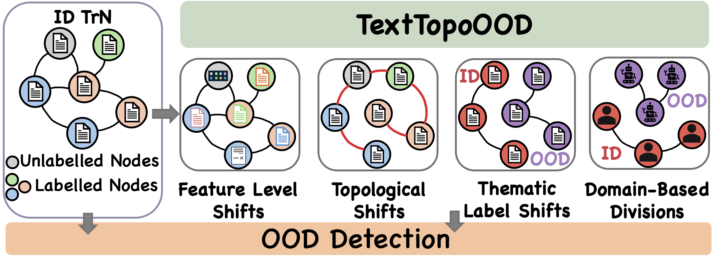

Text Meets Topology: Rethinking Out-of-distribution Detection in Text-Rich Networks
We introduce TextTopoOOD, a framework for modeling diverse OOD scenarios on text-rich networks, and propose TNT-OOD, a novel detection method that captures the intricate interplay between text and topology.